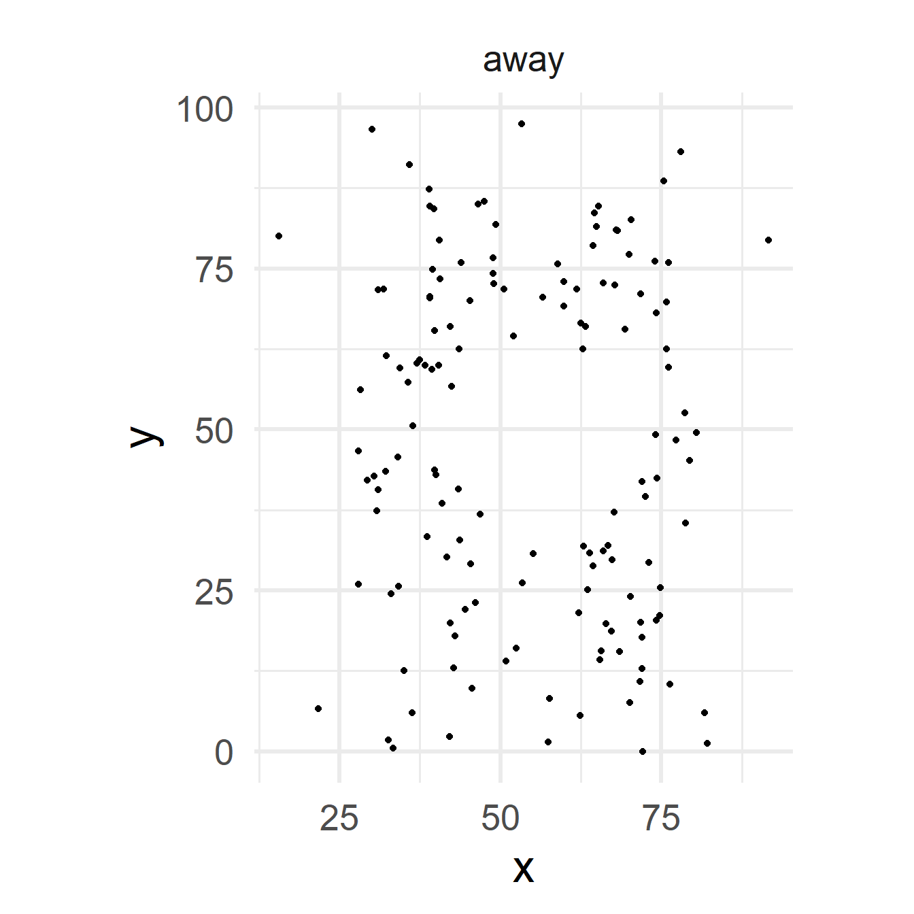
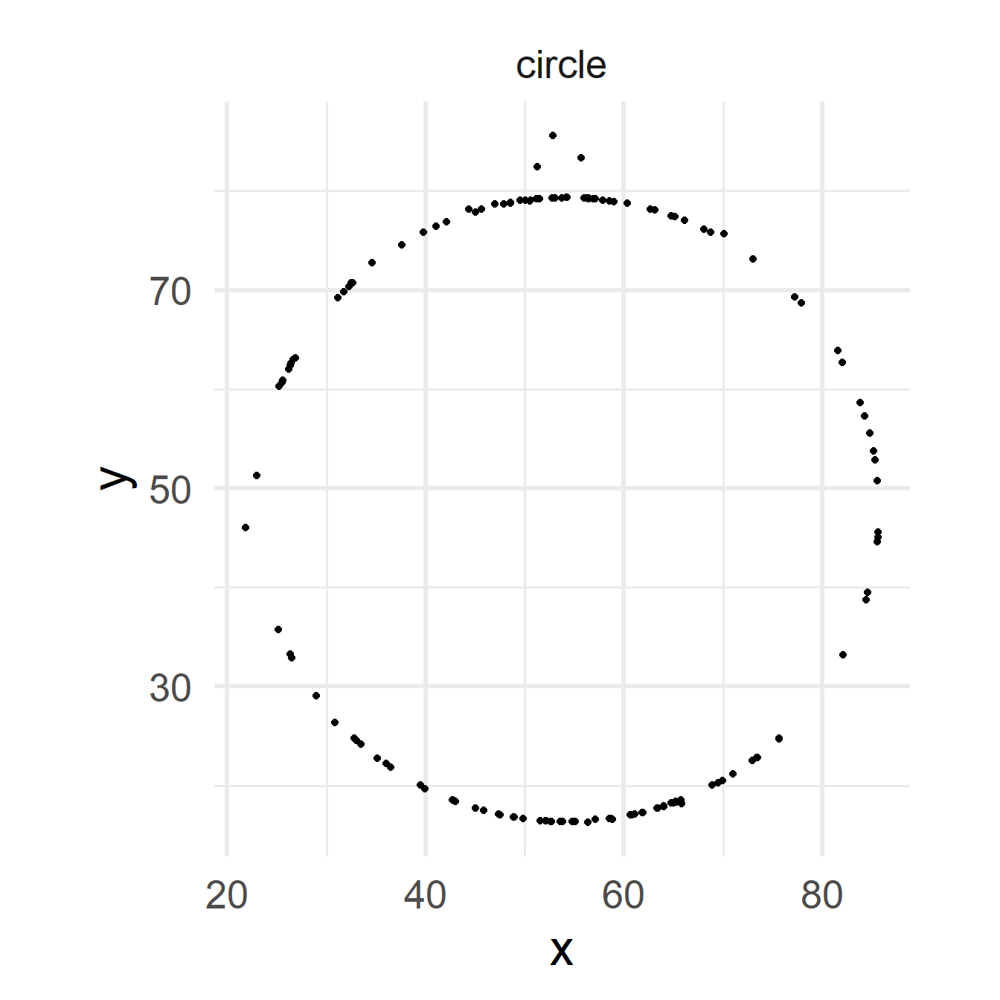

Characteristic |
N = 8 1 |
|---|---|
| vec | |
| 1 | 1 (13%) |
| 2 | 1 (13%) |
| 3 | 1 (13%) |
| 4 | 1 (13%) |
| 5 | 1 (13%) |
| 6 | 1 (13%) |
| 7 | 1 (13%) |
| 8 | 1 (13%) |
| Freq | |
| 1 | 7 (88%) |
| 2 | 1 (13%) |
| ratio_total | |
| 0.111111111111111 | 7 (88%) |
| 0.222222222222222 | 1 (13%) |
| 1
n (%) |
|
Traditional Methods
Beware of summarized Data
| dataset | mean_x | mean_y | std_dev_x | std_dev_y | corr_x_y |
|---|---|---|---|---|---|
| away | 54.266 | 47.835 | 16.770 | 26.940 | −0.064 |
| bullseye | 54.269 | 47.831 | 16.769 | 26.936 | −0.069 |
| circle | 54.267 | 47.838 | 16.760 | 26.930 | −0.068 |
| dino | 54.263 | 47.832 | 16.765 | 26.935 | −0.064 |
| dots | 54.260 | 47.840 | 16.768 | 26.930 | −0.060 |
| h_lines | 54.261 | 47.830 | 16.766 | 26.940 | −0.062 |
| high_lines | 54.269 | 47.835 | 16.767 | 26.940 | −0.069 |
| slant_down | 54.268 | 47.836 | 16.767 | 26.936 | −0.069 |
| slant_up | 54.266 | 47.831 | 16.769 | 26.939 | −0.069 |
| star | 54.267 | 47.840 | 16.769 | 26.930 | −0.063 |
| v_lines | 54.270 | 47.837 | 16.770 | 26.938 | −0.069 |
| wide_lines | 54.267 | 47.832 | 16.770 | 26.938 | −0.067 |
| x_shape | 54.260 | 47.840 | 16.770 | 26.930 | −0.066 |





References